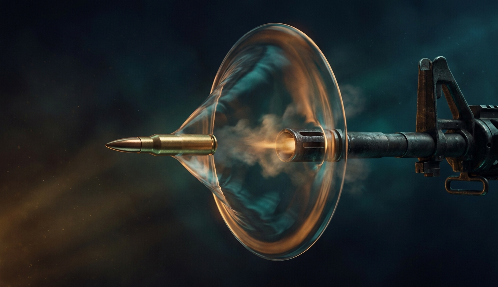
Миллисекунда в стволе, секунды в воздухе, микросекунды в цели. Три раздела одной науки, которые объясняют, почему снайпер целится в небо, а танковый снаряд похож на карандаш.
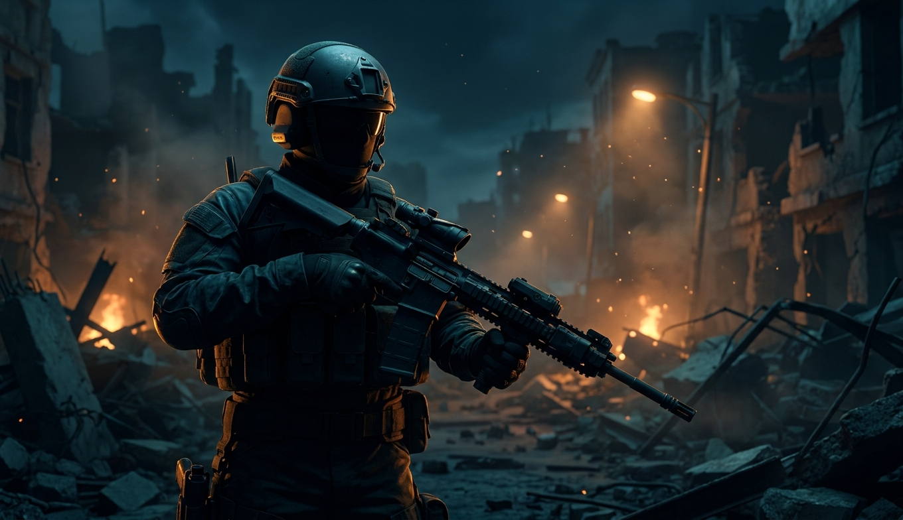
Автомат, пулемёт, снайперка, пистолет, гранатомёт и броня. Самая консервативная область: Калашников 1947 года и Браунинг 1933-го до сих пор в строю, но патрон впервые за 60 лет реально меняется.
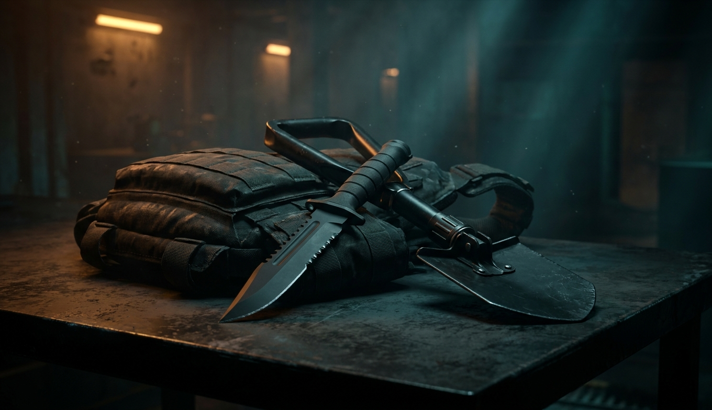
Штык-нож, лопатка, томагавк, мачете и парадная сабля. Ни одно из них не решает бой, но каждое до сих пор выдают по уставу, и штыковые атаки случались в 2004, 2009 и 2011 годах.
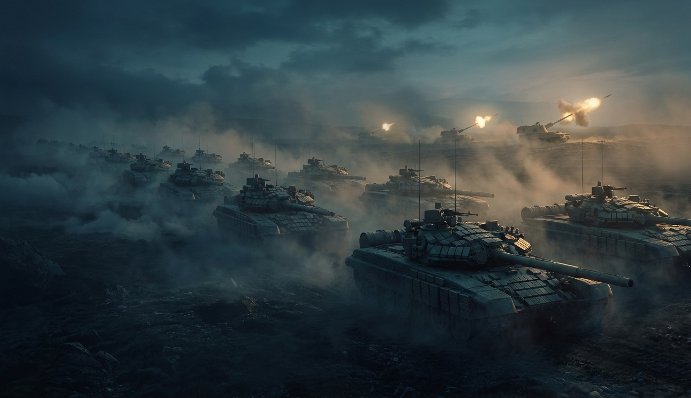
Танк за $4-10 млн, гаубица на 70 км, реактивный снаряд на 500 км и FPV-дрон за $500, который сжигает первые два. Наземная война 2020-х: самая быстро меняющаяся часть арсенала.
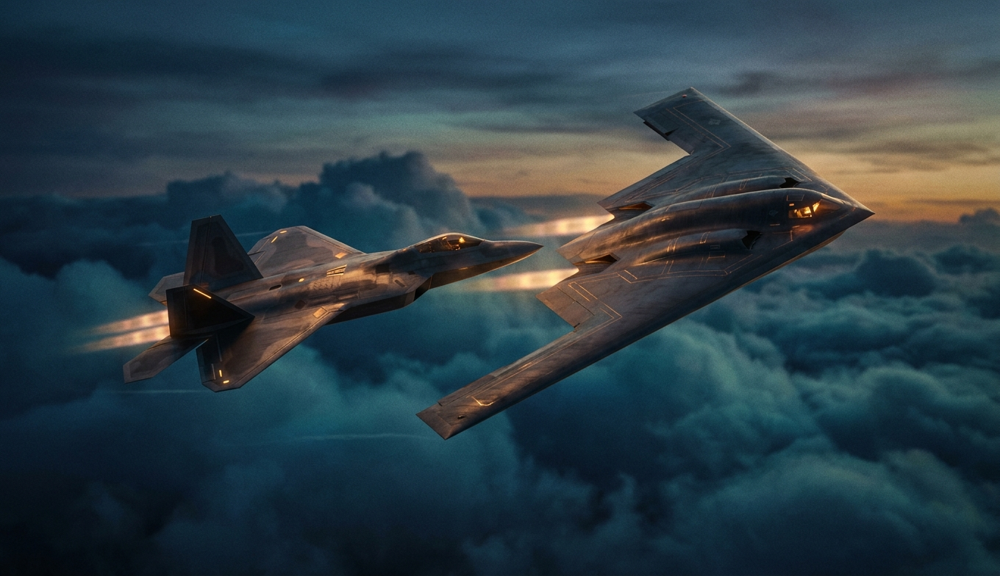
Пятое поколение уже серийное, шестое объявлено, бомба стала планирующей, ракета «воздух-воздух» бьёт на 300 км, а гиперзвук перестал быть словом из презентаций.
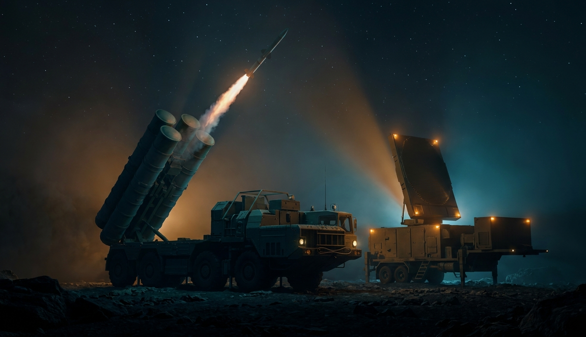
От перехватчика в космосе за $60 млн до дробовика против FPV за $500. Экономика обороны перевернулась: сбивать стало дороже, чем запускать, и ответ ищут в лазерах и пушках.
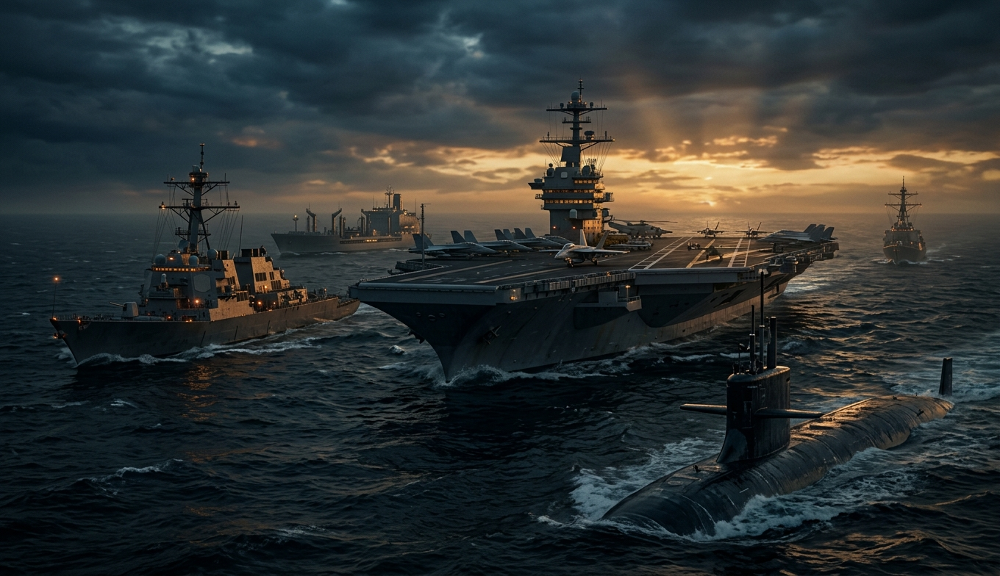
100 000 тонн с ядерным сердцем, подводные ракетоносцы на 16 ракет и дроны-катера за $250 тыс., которые прогнали Черноморский флот из Севастополя. Море - самый дорогой театр и самый уязвимый.
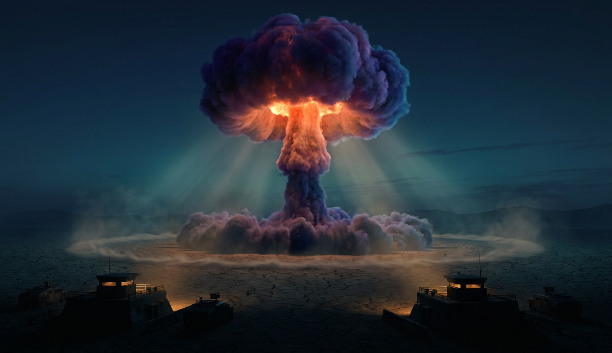
Килотонны, мегатонны, psi и кал/см². Как устроен заряд в общих чертах, куда уходит энергия и что происходит на каждом километре от эпицентра. Все цифры - из Glasstone, NUKEMAP и открытых справочников.
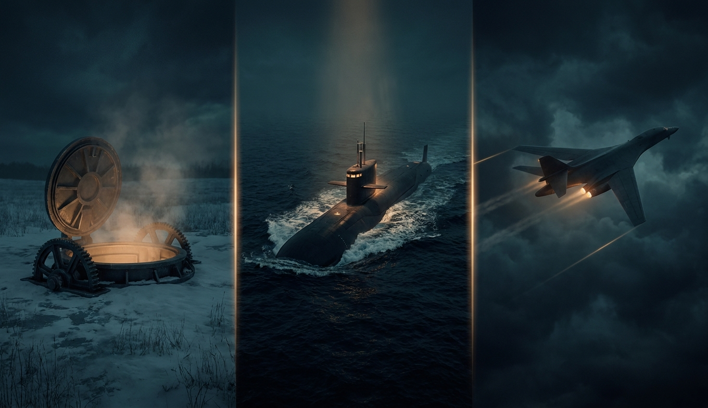
Три способа доставить заряд на другой континент, три причины, почему ни один из них нельзя убрать, и всё новое: «Сармат», «Авангард», «Буревестник», «Посейдон», Sentinel, Columbia, B-21, DF-41.
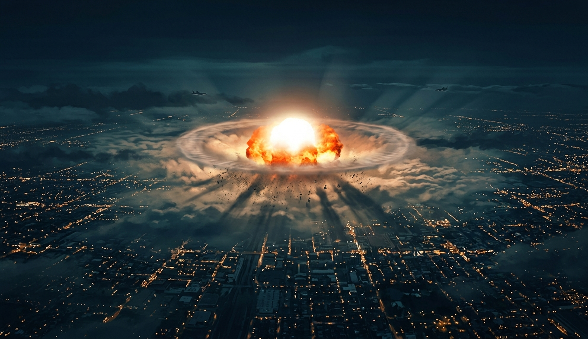
Один заряд над мегаполисом по секундам, ЭМИ над континентом и климатическая арифметика обмена ударами. Не для страха, а чтобы цифры из таблиц стали расстояниями на знакомой карте.
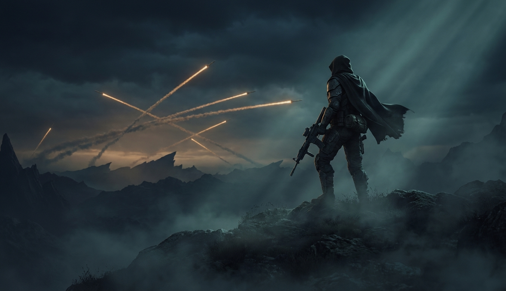
Всё, что перечислено на 60+ слайдах, куплено за ~2.7 триллиона долларов в год - столько мир тратит на оборону в 2025-м, впервые с холодной войны. Большая часть этого железа никогда не выстрелит по цели, и в этом его главная функция: быть настолько убедительным, чтобы не понадобиться.